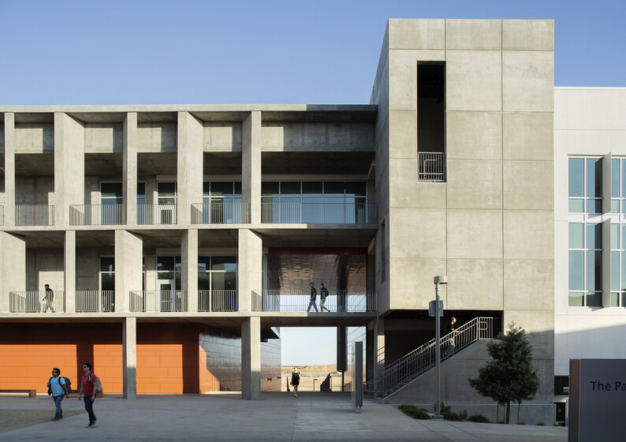

Location
We host speakers, events, research meetings, and visitors. Please contact us via email to plan your visit, request parking, and more.
The VISTA office is located on the third floor of the Arts and Computational Sciences, adjacent to the Pavilion.
The Arts and Computational Sciences building is part of the UC Merced 2020 Project that will anchor the new Academic Quad. Like all 2020 Project buildings at UC Merced, ACS has Leadership in Energy and Environmental Design (LEED) Platinum certification by the U.S. Green Building Council.
Interactive Map
VISTA
University of California, Merced
5200 North Lake Road
Merced, CA 95343
Physical Location:
VISTA
Arts and Computational Sciences, 305-310
University of California, Merced
Merced, CA 95343
Walking Directions to VISTA
From Scholars Lot at the main entrance of campus, follow Scholar’s Lane uphill and after passing Little Lake on the Right, take the first right toward the Pavilion Dining Hall but follow the road right to a large concrete building. The main entrance to the Arts & Computational Sciences Building is on the right side closest to the Pavilion.
From Bellevue Lot, enter campus via University Avenue, passing the Welcome Center and Conference Center. Turn right onto Scholars Lane. After passing Little Lake on the Right, take the first right toward the Pavilion Dining Hall but follow the road right to a large concrete building. The main entrance to the Arts & Computational Sciences Building is on the right side closest to the Pavilion.
Driving Directions to Campus
ParkingCampus Map
UC Merced, 5200 N. Lake Road, is about eight miles northeast of the city of Merced’s downtown area. Accessible in a few hours via car from the region’s major airports (San Francisco, Sacramento, San Jose and Fresno), UC Merced is near Highway 99 and on the way to Yosemite National Park’s Highway 140 entrance.
Driving directions for travelers coming to campus by way of Highway 99 — the nearby state route that stretches nearly the entire length of California’s Central Valley — are:
DIRECTIONS FROM SOUTHBOUND HIGHWAY 99
- Head southeast on CA-99 South.
- Take Exit 187B toward Martin Luther King Jr. Way.
- Turn left onto CA-59 North/Martin Luther King Jr. Way.
- Take the third right onto West 16th Street.
- Take the third left onto G Street.
- Turn right onto East Bellevue Road.
- Turn left at Lake Road.
- Turn right onto Scholars Lane for the main Scholars parking lot. Arrive at main entrance to the UC Merced campus.
DIRECTIONS FROM NorthBound HIGHWAY 99
- Head northwest on CA-99 North.
- Take exit 187A for G Street.
- Turn right onto G Street.
- Turn right onto East Bellevue Road.
- Turn left at Lake Road.
- Turn right onto Scholars Lane for the main Scholars parking lot.